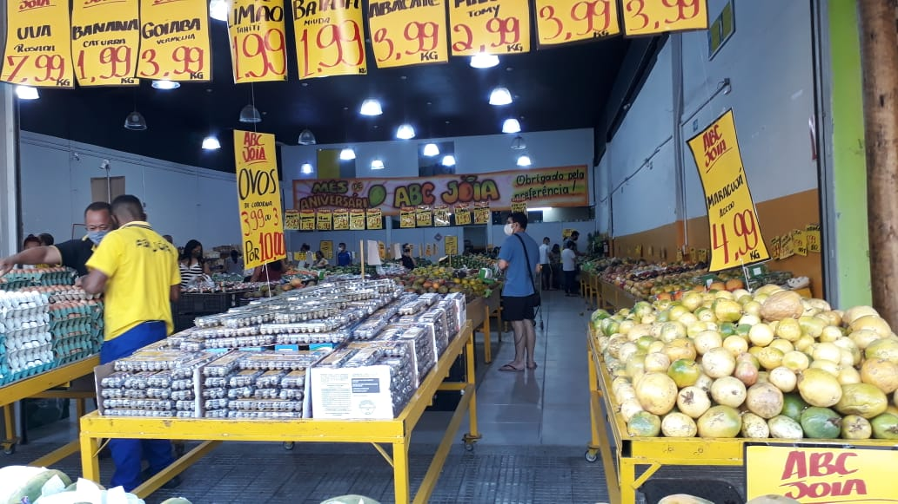

Nesta quinta-feira, dia 19, depois de meses em fase de construção, finalmente foi inaugurado o terceiro e agora
principal, hortifruti do bairro localizado no meio da Avenida Cristiano Machado, em um ponto bem estratégico eu
diria, na frente do supermercado Dia.
Havia muitas reclamações dos moradores da região sobre não haver um hortifruti que tenha muitas variações de
alimentos e com um preço não tão salgado. Maria Fernanda de 54 anos diz: "O único supermercado daqui não tem as
frutas e hortalicas que eu gostaria de comprar, além do preço bem caro por cada kilo."

Realmente, esse novo hortifruti pode ser a "salvação da salada" da mesa de cada morador que quer comprar alimentos
de qualidade por um preço que cabe no seu bolso. Marcelo de 52 anos diz: "Eu acredito que este novo hortifruti
está vindo com frutos e verduras que eu possa comprar." E ainda brinca: "Eu tenho certeza que não é só eu que
estou querendo comer uma saladinha logo."